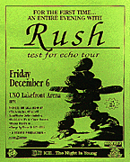
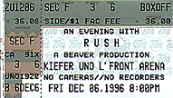

|
December 6, 1996 UNO Lakefront Arena. New Orleans, LA
  The Times-Picayune (New Orleans) December 11, 1996
MARATHON CONCERT A REAL RUSH
Most music fans have at least one band that played a crucial role in their formative years, and thus earned a permanent place on their list of all-time favorites. For me, that band is Rush. So I pretty much checked my objectivity at the door of the UNO Lakefront Arena Friday night before joining fellow hard-core fans -- young baby boomers and old generation x-ers, mostly white, mostly male -- on the arena floor. Having attended seven consecutive Rush tours since 1984, I can only judge the show from the perspective of someone intimately familiar with the band's output. And compared to past outings, this was one of the most energized sets that I've experienced, deftly showcasing the trademark mix of brains and brawn that Rush acolytes revel in. With no opening act, drummer Neil Peart, guitarist Alex Lifeson and bassist/vocalist/keyboardist Geddy Lee served up a generous two-and-a-half hours of music that drew from most of their 16 studio albums. Longtime fans were treated to two notable surprises: for the first time, the band presented the 10-minute "Natural Science" (from 1980's "Permanent Waves") and the entire Ayn Rand-inspired "2112" epic. Lee strained to replicate his squeal in "Temples of Syrinx"; happily, his voice has mellowed in the 20 years since it was recorded. They smoothly integrated classics with fresher material, moving from "Freewill" to "Roll the Bones", from "Nobody's Hero" to "Closer to the Heart", from an energized "Force 10" to the finale of an exuberant "Spirit of the Radio", a cathartic "Tom Sawyer" and a powerhouse encore of "YYZ", in which Lee crafted some especially dextrous bass lines. If the Rush stage is a cathedral, Peart's riser -- atop which he is encircled by a revolving cocoon of percussion that allows him to play both acoustic and electronic kits -- is the altar. He is the only drummer with any business hauling out the most overused of arena rock cliches, the drum solo. His eight-minute workout, based around the "Rhythm Method" theme he's expounded on for years, was a taut, lyrical clinic on technical prowess and power. Over a rock-steady rhythm, he tapped out melodies on a cowbell and an electronic xylophone, then switched to African-inspired beats on the toms to match his African-inspired cap and vest. Completing the African connection, merchandise tables offered "The Masked Rider," Peart's travel log of his bicycling adventures in West Africa. Rush's two most recent albums, "Test For Echo" and "Counterparts", boast some of the strongest, most vital music the band has made in a decade; after 22 years with the same lineup, the three still obviously enjoy their onstage interplay, as reflected in the performances. That, plus the visuals projected on the big-screen backdrop, the attention to detail, the unexpected twists (like the quick breakdown following Lifeson's solo in "Red Barchetta"), meant that this disciple, at least, left with his faith renewed.
|
||||
{kind=link}